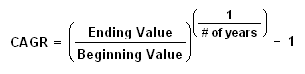

The year-over-year growth rate of an investment over a specified period of time.
The compound annual growth rate is calculated by taking the nth root of the total percentage growth rate, where n is the number of years in the period being considered.
This can be written as follows:
CAGR isn't the actual return in reality. It's an imaginary number that describes the rate at which an investment would have grown if it grew at a steady rate. You can think of CAGR as a way to smooth out the returns.
Don't worry if this concept is still fuzzy to you - CAGR is one of those terms best defined by example. Suppose you invested $10,000 in a portfolio on Jan 1, 2005. Let's say by Jan 1, 2006, your portfolio had grown to $13,000, then $14,000 by 2007, and finally ended up at $19,500 by 2008.
Your CAGR would be the ratio of your ending value to beginning value ($19,500 / $10,000 = 1.95) raised to the power of 1/3 (since 1/# of years = 1/3), then subtracting 1 from the resulting number:
1.95 raised to 1/3 power = 1.2493. (This could be written as 1.95^0.3333). 1.2493 - 1 = 0.2493 Another way of writing 0.2493 is 24.93%.
Thus, your CAGR for your three-year investment is equal to 24.93%, representing the smoothed annualized gain you earned over your investment time horizon.
{kind=link}